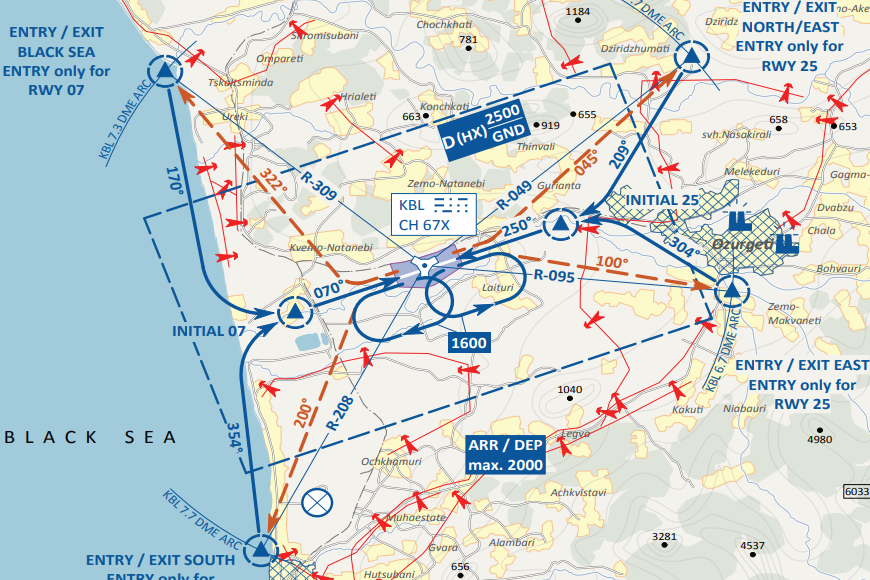
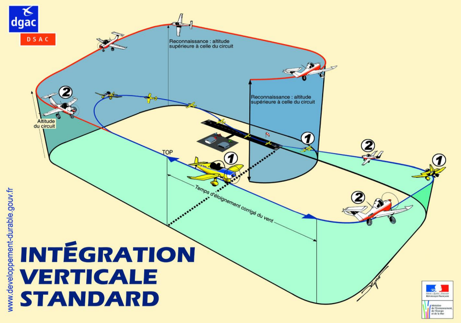

Les arrivée
Lorsque les avions ont besoin d'atterrir sur un terrain, ils doivent choisir et respecter une procédure en fonction de la présence ou non d'un Air Traffic Contrôlleur (ATC), de la météo, du trafic en vol et d'autres paramètres.
Voici les différentes procédures :
L'intégration par points visuels :
Comme pour les départs, lorsque le météo et la visibilité le permet, il est possible d'utiliser des points visuels reconnu sur une carte VAC pour se rapprocher du terrain.
ATC disponible : FAF2612, nous demandons une approche pour le terrain de Kuatisi via November Echo et November.
ATC indisponible : FAF2612, nous approchons du terrain de Kutaisi par November Echo et November pour un atterrisage piste 07 dans 5 minutes.
L'intégration verticale standard :
Cette manoeuvre consite à passer au dessus de la piste entre 1500 ft et 3000 ft puis entammer un tour de piste qui permettra d'être placer dans l'axe de piste par la suite. Voir schéma ci dessous:
Le guidage par l'ATC :
Lorsque la visibilité est mauvaise et qu'un ATC est disponible, alors celui peut donner une série de cap à suivre pour former une route que le pilote suivera pour bien se présenter à l'atterrissage.
L'approche aux instruments :
Souvent, à proximité ou sur les aéroports se tourve des moyens de radionavigation comme les VOR et les TACAN. Il est donc possible des les utiliser pour ammener l'avion à l'aéroport lorsque la météo est mauvaise et qu'il y a pas d'ATC. De plus il est possible d'utiliser également des vecteurs additionnels, ou des points de navigations pour formerons une route pour rejoindre le terrain.